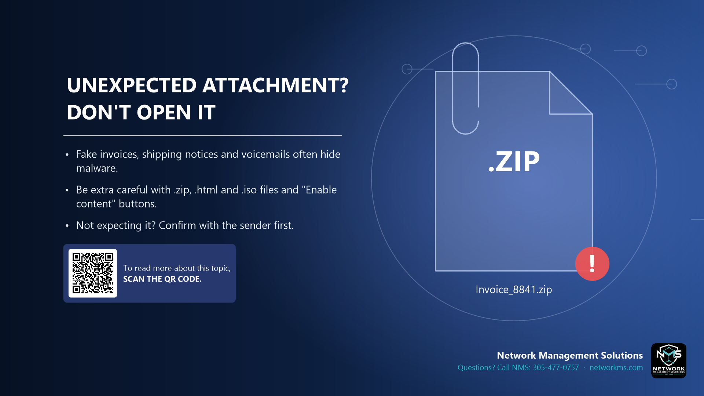

Unexpected attachment? Don't open it

- Fake invoices, shipping notices and voicemails often hide malware.
- Be extra careful with .zip, .html and .iso files and "Enable content" buttons.
- Not expecting it? Confirm with the sender first.
Attackers attach files that look like invoices, purchase orders, scanned documents, voicemails or shipping labels. Opening them can install malware or ransomware.
Higher risk files: .zip, .iso, .html or .htm, .js, .exe, and Office documents that ask you to click "Enable Content" or "Enable Editing".
If you were not expecting a file, check with the sender by phone or a new message before opening it.
Not sure about an email, text or call? Call NMS before you click: 305-477-0757 · networkms.com